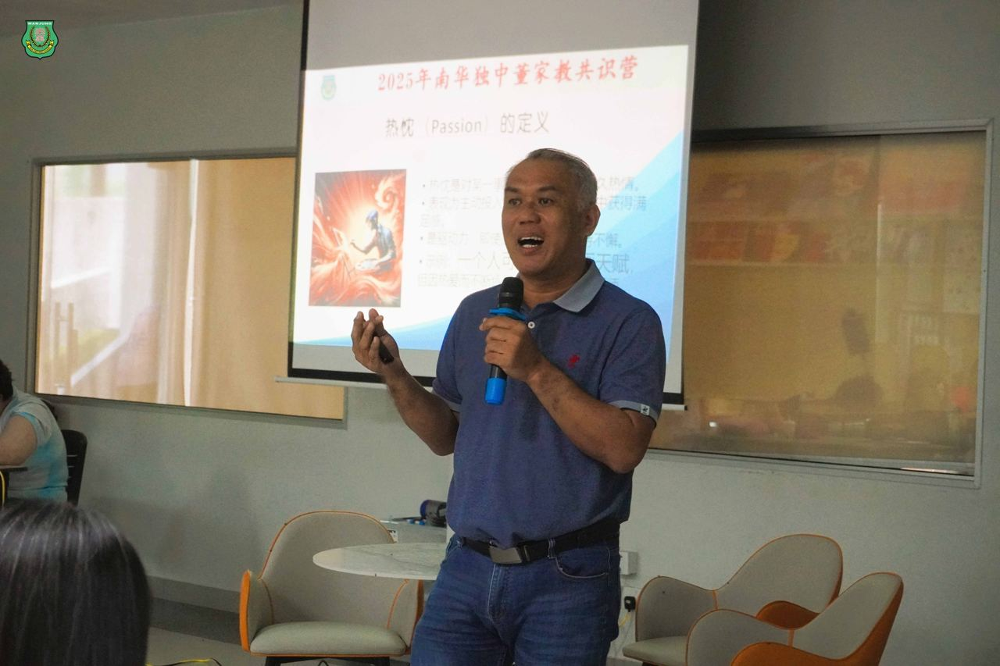
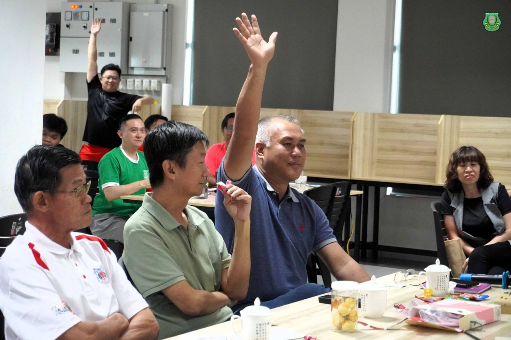
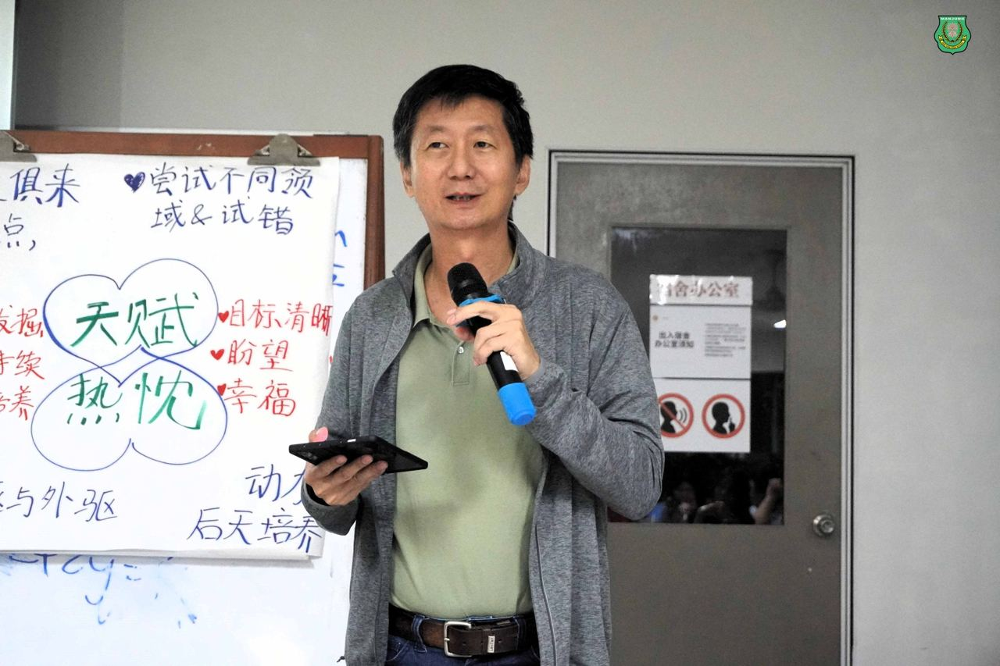
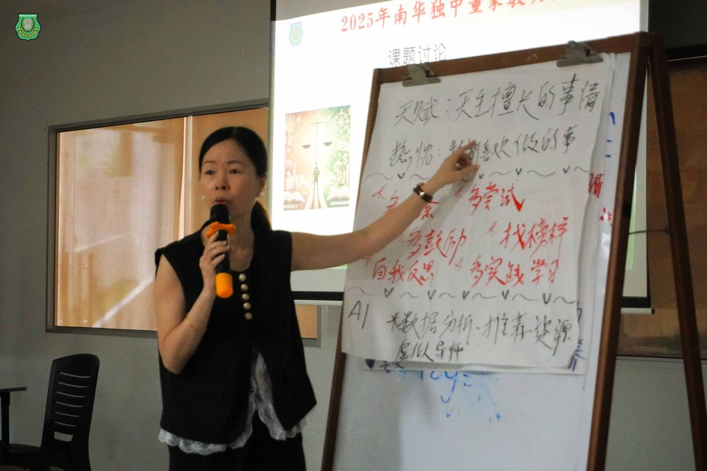
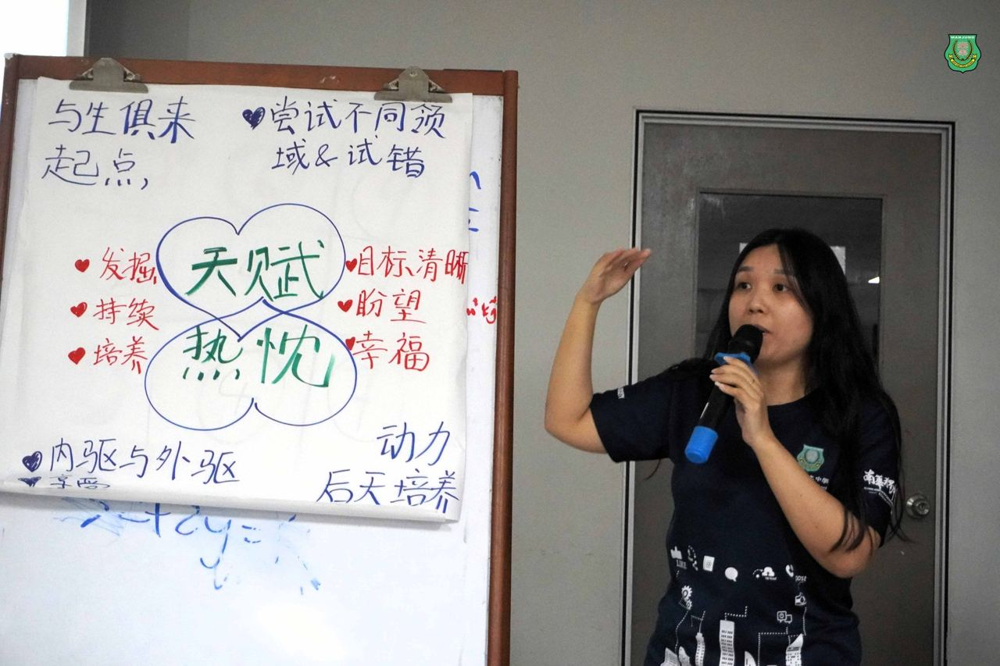
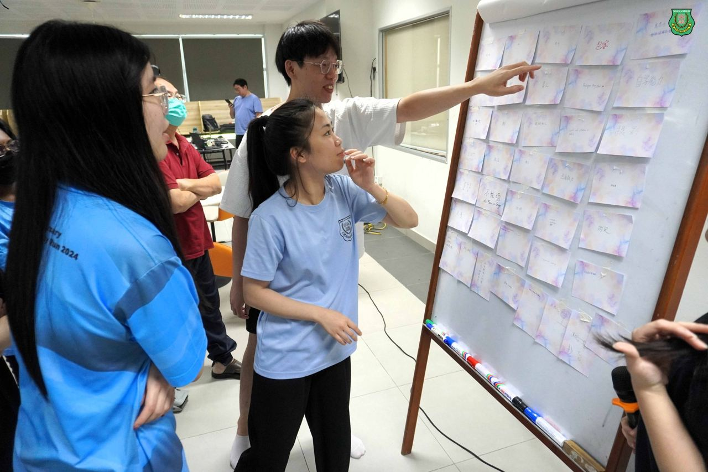
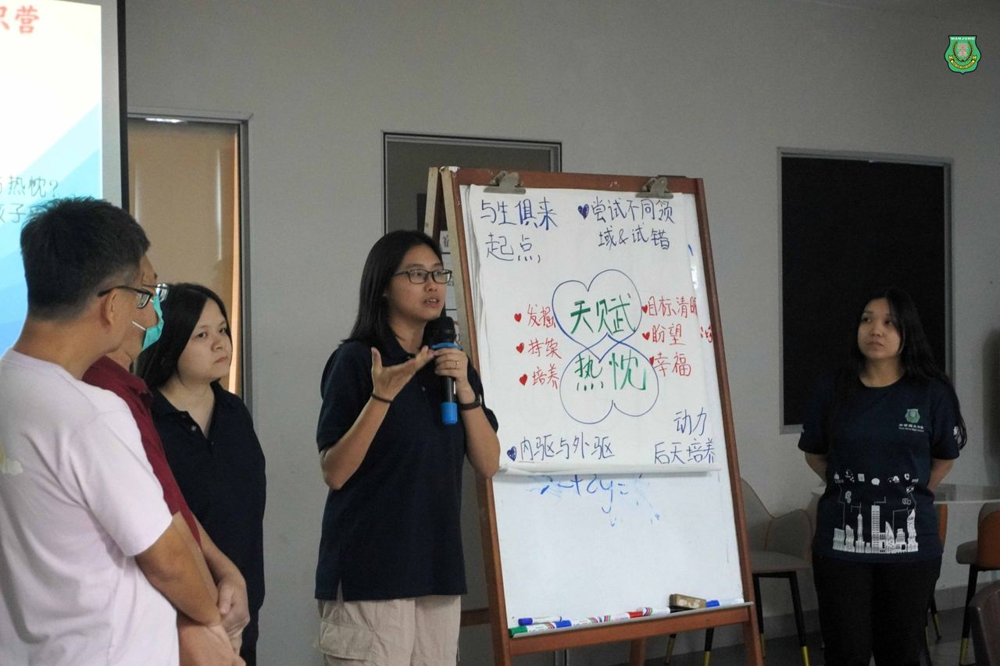
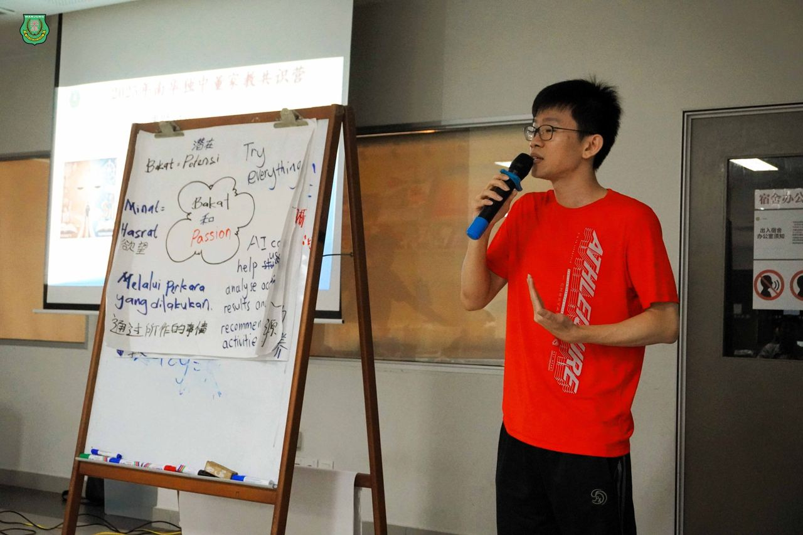

点燃教育种子，照见前行未来：
点燃教育种子，照见前行未来：
南华共识营“天赋与热忱”环节深度回顾
2025南华独中共识营其中极具启发性的环节《天赋与热忱》由董事总务何添胜先生负责主讲。这不仅是教育理念的深入交流，更是透过实践操作串联起“教师专业技能竞拍会”活动，层层铺排，精准扣题，最终点燃了每位教育者心中那团为人育才的热火。
从问题出发：先思考，再学习
“你如何定义天赋与热忱？你曾在哪一刻看见学生的潜能？你又做了什么？”何添胜董事在共识营第一天下午，便提前为次日讲座埋下伏笔。他邀请所有南华独中老师分组，先行书写对于“天赋”与“热忱”的定义，并结合自身教学现场的真实经验，提出如何协助学生发掘天赋、点燃热忱。
“天赋与热忱不是抽象名词，而是每天教室里就可能萌芽的生命力。”董事的一句话，让老师们不只是预习，更是思索：我们是谁，我们教的是谁。
技能拍卖：当“教师的天赋”成为竞拍珍品
次日上午，一场别开生面的“教师专业技能竞拍会”正式登场，由李淑桦老师策划执行。每位老师将自己的天赋或特殊技能写在卡纸上，公开上台“拍卖”，让其他老师以象征性的方式竞拍。
从“自学能力”到“摄影技巧”，从“育人”到“专注倾听”，这些平日藏在课堂后的能力，在拍卖现场被悉数点亮。老师们在欢笑与互评中，不只看见彼此的光，也悄悄照见自己待补的影。
定义与重塑：再谈“天赋与热忱”的本质
何添胜董事从“天赋是种子，热忱是阳光”说起，带领大家系统梳理两者的差异、关联与教育意义。他强调，社会往往迷信“天才”的光环，却忽略“热忱”的坚持所能点燃的爆发力。
OECD报告指出，80%的高成就者兼具天赋与热忱；而教育的任务，是帮助学生找到这两者的交汇点。
讲座末尾，他邀请老师们回头检视前一天写下的定义与策略，再次讨论、补充、重写。随后，每组老师轮流上台分享心得，其中多组不约而同指出：“若要帮助学生理解天赋与热忱，教师自己必须先有清晰认知。”
一场关于“教师本身”的觉醒
这场“天赋与热忱”的学习历程，远不止是一次讲座那么简单。它是一次对教育初心的返照，是一次教师集体自觉的现场实践。
从分组反思、技能拍卖，到重写定义、公开发表，何添胜董事借着教育哲思与实操演练，让每一位老师不只理解“学生为何需要热忱”，更感受到“教师本身必须燃烧”。若教育是点火，那第一把火，应先燃起在教师心中。
如何添胜董事所说：“未来职场不需要标准答案，而是需要热爱问题的人才。而南华独中的老师，就是这些火种的守护者。”







